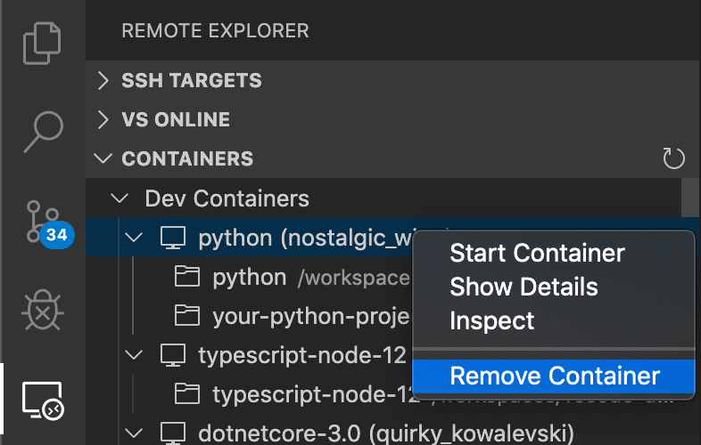
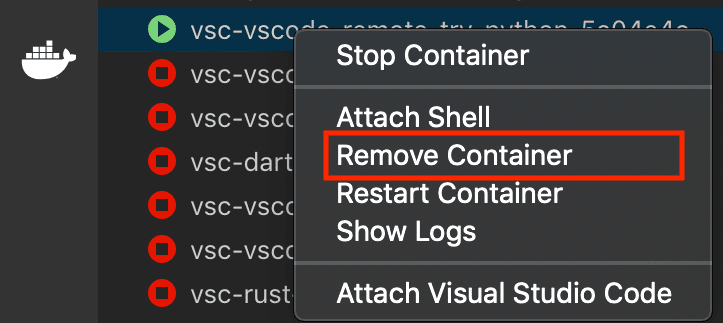

Dev Containers Tips and Tricks
This article includes some tips and tricks for getting the Dev Containers extension up and running in different environments.
Docker Desktop for Windows tips
Docker Desktop for Windows works well in most setups, but there are a few "gotchas" that can cause problems. Here are some tips on avoiding them:
-
Consider using the new Docker WSL 2 back-end on Windows 10 (2004+). If you are using Docker Desktop's WSL 2 back-end, you can use it to open folders inside WSL as well as locally. Containers are also shared between Windows and inside WSL and this new engine is less susceptible to file sharing issues. See the quick start for details.
-
Switch out of "Linux Containers on Windows (LCOW)" mode. While disabled by default, recent versions of Docker support Linux Containers on Windows (LCOW) that can allow you to use both Windows and Linux containers at the same time. However, this is a new feature, so you may encounter issues and the Dev Containers extension only supports Linux containers currently. You can switch out of LCOW mode at any time by right-clicking on the Docker task bar item and selecting Switch to Linux Containers... from the context menu.
-
Make sure your firewall allows Docker to set up a shared drive. Docker only needs to connect between two machine local IPs, but some firewall software may still block any drive sharing or the needed ports. See this Docker KB article for next steps on resolving this problem.
Here are some tips that applied to older versions of Docker for Windows but should now be resolved. If you run into strage behaviors due to a possible regression, these tips have solved problems in the past.
-
Use an AD domain account or local administrator account when sharing drives. Do not use an AAD (email-based) account. AAD (email-based) accounts have well-known issues, as documented in Docker issue #132 and issue #1352. If you must use an AAD account, create a separate local administrator account on your machine that you use purely for the purpose of sharing drives. Follow the steps in this blog post to get everything set up.
-
Stick with alphanumeric passwords to avoid drive sharing problems. When asked to share your drives on Windows, you will be prompted for the username and password of an account with admin privileges on the machine. If you are warned about an incorrect username or password, this may be due to special characters in the password. For example,
!,[and]are known to cause issues. Change your password to alphanumeric characters to resolve. See this issue about Docker volume mounting problems for details. -
Use your Docker ID to sign in to Docker (not your email). The Docker CLI only supports using your Docker ID, so using your email can cause problems. See Docker issue #935 for details.
If you are still having trouble, see the Docker Desktop for Windows troubleshooting guide.
Enabling file sharing in Docker Desktop
The VS Code Dev Containers extension can only automatically mount your source code into a container if your code is in a folder or drive shared with Docker. If you open a dev container from a non-shared location, the container will successfully start but the workspace will be empty.
Note that this step is not required with Docker Desktop's WSL 2 engine.
To change Docker's drive and folder sharing settings:
Windows:
- Right-click on the Docker task bar item and select Settings.
- Go to Resources > File Sharing and check the drive(s) where your source code is located.
- If you see a message about your local firewall blocking the sharing action, see this Docker KB article for next steps.
macOS:
- Click on the Docker menu bar item and select Preferences.
- Go to Resources > File Sharing. Confirm that the folder containing your source code is under one of the shared folders listed.
Resolving Git line ending issues in containers (resulting in many modified files)
Since Windows and Linux use different default line endings, Git may report a large number of modified files that have no differences aside from their line endings. To prevent this from happening, you can disable line ending conversion using a .gitattributes file or globally on the Windows side.
Typically adding or modifying a .gitattributes file in your repository is the most reliable way to solve this problem. Committing this file to source control will help others and allows you to vary behaviors by repository as appropriate. For example, adding the following to .gitattributes file to the root of your repository will force everything to be LF, except for Windows batch files that require CRLF:
* text=auto eol=lf
*.{cmd,[cC][mM][dD]} text eol=crlf
*.{bat,[bB][aA][tT]} text eol=crlf
Note that this works in Git v2.10+, so if you are running into problems, be sure you've got a recent Git client installed. You can add other file types in your repository that require CRLF to this same file.
If you would prefer to still always upload Unix-style line endings (LF), you can use the input option.
git config --global core.autocrlf input
If you'd prefer to disable line-ending conversion entirely, run the following instead:
git config --global core.autocrlf false
Finally, you may need to clone the repository again for these settings to take effect.
Avoid setting up Git in a container when using Docker Compose
See Sharing Git credentials with your container in the main containers article for information on resolving this issue.
Resolving hangs when doing a Git push or sync from a Container
If you clone a Git repository using SSH and your SSH key has a passphrase, VS Code's pull and sync features may hang when running remotely.
Either use an SSH key without a passphrase, clone using HTTPS, or run git push from the command line to work around the issue.
Resolving errors about missing Linux dependencies
Some extensions rely on libraries not found in the certain Docker images. See the Containers article for a few options on resolving this issue.
Speeding up containers in Docker Desktop
By default, Docker Desktop only gives containers a fraction of your machine capacity. In most cases, this is enough, but if you are doing something that requires more capacity, you can increase memory, CPU, or disk use.
First, try stopping any running containers you are no longer using.
If this doesn't solve your problem, you may want to see if CPU usage is actually the issue or if there is something else going on. An easy way to check this is to install the Resource Monitor extension. When installed in a container, it provides information about capacity for your containers in the Status bar.
If you'd like this extension to always be installed, add this to your settings.json:
"dev.containers.defaultExtensions": [
"mutantdino.resourcemonitor"
]
If you determine that you need to give your container more of your machine's capacity, follow these steps:
- Right-click on the Docker task bar item and select Settings / Preferences.
- Go to Advanced to increase CPU, Memory, or Swap.
- On macOS, go to Disk to increase the amount of disk Docker is allowed to consume on your machine. On Windows, this is located under Advanced with the other settings.
Finally, if your container is doing disk intensive operations or you are just looking for faster response times, see Improving container disk performance for tips. VS Code's defaults optimize for convenience and universal support, but can be optimized.
Cleaning out unused containers and images
If you see an error from Docker reporting that you are out of disk space, you can typically resolve this by cleaning out unused containers and images. There are a few ways to do this:
Option 1: Use the Remote Explorer
You can delete containers by selecting the Remote Explorer, right-click on the container you want to remove, and select Remove Container.

However, this does not clean up any images you may have downloaded, which can clutter up your system.
Option 2: Use the Docker extension
-
Open a local window in VS Code (File > New Window).
-
Install the Docker extension from the Extensions view if not already present.
-
You can then go to the Docker view and expand the Containers or Images node, right-click, and select Remove Container / Image.

Option 3: Use the Docker CLI to pick containers to delete
- Open a local terminal/command prompt (or use a local window in VS Code).
- Type
docker ps -ato see a list of all containers. - Type
docker rm <Container ID>from this list to remove a container. - Type
docker image pruneto remove any unused images.
If docker ps does not provide enough information to identify the container you want to delete, the following command will list all development containers managed by VS Code and the folder used to generate them.
docker ps -a --filter="label=vsch.quality" --format "table {{.ID}}\t{{.Status}}\t{{.Image}}\tvscode-{{.Label \"vsch.quality\"}}\t{{.Label \"vsch.local.folder\"}}"
Option 4: Use Docker Compose
- Open a local terminal/command prompt (or use a local window in VS Code).
- Go to the directory with your
docker-compose.ymlfile. - Type
docker-compose downto stop and delete the containers. If you have more than one Docker Compose file, you can specify additional Docker Compose files with the-fargument.
Option 4: Delete all containers and images that are not running:
- Open a local terminal/command prompt (or use a local window in VS Code).
- Type
docker system prune --all.
Resolving Dockerfile build failures for images using Debian 8
When building containers that use images based on Debian 8/Jessie — such as older versions of the node:8 image — you may encounter the following error:
...
W: Failed to fetch http://deb.debian.org/debian/dists/jessie-updates/InRelease Unable to find expected entry 'main/binary-amd64/Packages' in Release file (Wrong sources.list entry or malformed file)
E: Some index files failed to download. They have been ignored, or old ones used instead.
...
This is a well known issue caused by the Debian 8 being "archived". More recent versions of images typically resolve this problem, often by upgrading to Debian 9/Stretch.
There are two ways to resolve this error:
-
Option 1: Remove any containers that depend on the image, remove the image, and then try building again. This should download an updated image that is not affected by the problem. See cleaning out unused containers and images for details.
-
Option 2: If you don't want to delete your containers or images, add this line into your Dockerfile before any
aptorapt-getcommand. It adds the needed source lists for Jessie:# Add archived sources to source list if base image uses Debian 8 / Jessie RUN cat /etc/*-release | grep -q jessie && printf "deb http://archive.debian.org/debian/ jessie main\ndeb-src http://archive.debian.org/debian/ jessie main\ndeb http://security.debian.org jessie/updates main\ndeb-src http://security.debian.org jessie/updates main" > /etc/apt/sources.list
Resolving Docker Hub sign in errors when an email is used
The Docker CLI only supports using your Docker ID, so using your email to sign in can cause problems. See Docker issue #935 for details.
As a workaround, use your Docker ID to sign in to Docker rather than your email.
High CPU utilization of Hyperkit on macOS
There is known issue with Docker for Mac that can drive high CPU spikes. In particular, high CPU usage occurring when watching files and building. If you see high CPU usage for com.docker.hyperkit in Activity Monitor while very little is going on in your dev container, you are likely hitting this issue. Follow the Docker issue for updates and fixes.
Using an SSH tunnel to connect to a remote Docker host
The Develop inside a container on a remote Docker Machine or SSH host article covers how to setup VS Code when working with a remote Docker host. This is often as simple as setting the Docker extension docker.environment property in settings.json or the DOCKER_HOST environment variable to a ssh:// or tcp:// URI.
However, you may run into situations where this does not work in your environment due to SSH configuration complexity or other limitations. In this case, an SSH tunnel can be used as a fallback.
Using an SSH tunnel as a fallback option
You can set up an SSH tunnel and forward the Docker socket from your remote host to your local machine.
Follow these steps:
-
Install an OpenSSH compatible SSH client.
-
Update the Docker extension
docker.environmentproperty in your user or workspacesettings.jsonas follows:"docker.environment": { "DOCKER_HOST": "tcp://localhost:23750" } -
Run the following command from a local terminal / PowerShell (replacing
user@hostnamewith the remote user and hostname / IP for your server):ssh -NL localhost:23750:/var/run/docker.sock user@hostname
VS Code will now be able to attach to any running container on the remote host. You can also use specialized, local devcontainer.json files to create / connect to a remote dev container.
Once you are done, press Ctrl+C in the terminal / PowerShell to close the tunnel.
Note: If the
sshcommand fails, you may need toAllowStreamLocalForwardingon your SSH host.
- Open
/etc/ssh/sshd_configin an editor (like Vim, nano, or Pico) on the SSH host (not locally).- Add the setting
AllowStreamLocalForwarding yes.- Restart the SSH server (on Ubuntu, run
sudo systemctl restart sshd).- Retry.
Persisting user profile
You can use the mounts property to persist the user profile (to keep things like shell history) in your dev container across rebuilds.
"mounts": [
"source=profile,target=/root,type=volume",
"target=/root/.vscode-server,type=volume"
],
The above code first creates a named volume called profile mounted to /root, which will survive a rebuild. It next creates an anonymous volume mounted to /root/.vscode-server that gets destroyed on rebuild, which allows VS Code to reinstall extensions and dotfiles.
Advanced container configuration tips
See the Advanced container configuration articles for information on the following topics:
- Adding environment variables
- Adding another local file mount
- Changing or removing the default source code mount
- Improving container disk performance
- Adding a non-root user to your dev container
- Avoiding extension reinstalls on container rebuild
- Setting the project name for Docker Compose
- Using Docker or Kubernetes from inside a container
- Connecting to multiple containers at once
- Developing inside a container on a remote Docker Machine or SSH host
- Reducing Dockerfile build warnings
Extension tips
While many extensions will work unmodified, there are a few issues that can prevent certain features from working as expected. In some cases, you can use another command to work around the issue, while in others, the extension may need to be modified. The Remote Extensions Tips section provides a quick reference for common issues and tips on resolving them. You can also refer to the main extension article on Supporting Remote Development for an in-depth guide on modifying extensions to support remote extension hosts.
Questions and feedback
Reporting issues
If you run into an issue with the Dev Containers extension, it's important to collect the correct logs so that we'll be able to help diagnose your issue. You can get the Dev Containers extension logs with Dev Containers: Show Container Log.
If you're experiencing issues using other extensions remotely (for example, other extensions aren't loading or installing properly in a remote context), it's helpful to grab the log from the Remote Extension Host output channel (Output: Focus on Output View), and select Log (Remote Extension Host) from the dropdown.
Note: If you only see Log (Extension Host), this is the local extension host, and the remote extension host didn't launch. This is because the log channel is created only after the log file is created, so if the remote extension host does not launch, the remote extension host log file was not created and is not shown in the Output view. This is still helpful information to include in your issue.
Remote question and feedback resources
We have a variety of other remote resources:
- Search on Stack Overflow.
- Add a feature request or report a problem.